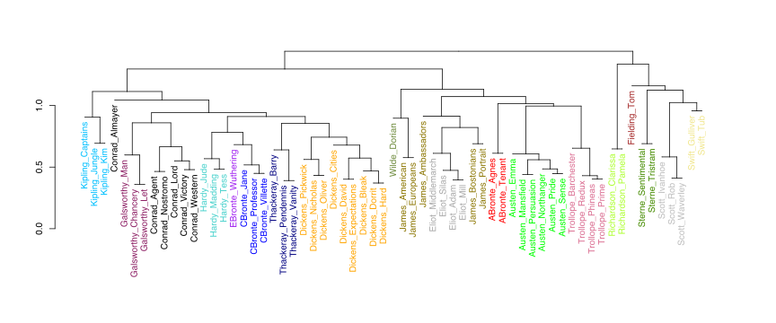
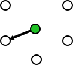
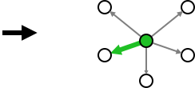
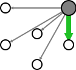
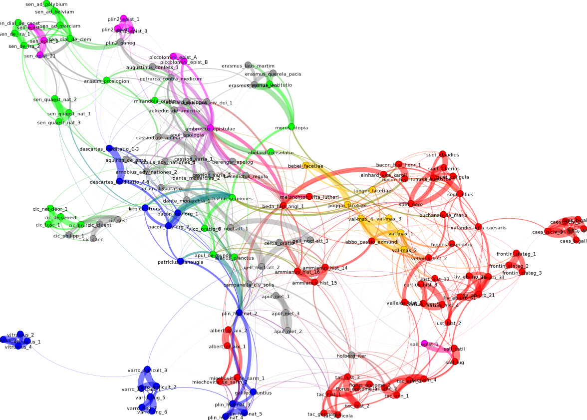

Stylometry with R:
large-scale text analysis
and the package 'stylo'
.
Maciej Eder
.
Pedagogical University of Krakow, Poland
Polish Academy of Sciences, Krakow, Poland
[use spacebar or left/right arrows to naviagate]
Aims of the study
- Assessing large number of texts.
- Leveraging existing explanatory methods.
- Automatic analysis of textual relations...
- ... that will reveal groups of similar texts.
Mapping literature
- Chronology
- Genre
- Imitation
- Authorship
- ...
Basic concepts
- “Computation into criticism” (John Burrows)
- “Distant reading” (Franco Moretti)
- “Macroanalysis” (Matthew Jockers)
- Big Data
- Authorship attribution
Cluster analysis dendrograms
- Highly dependent on feature selection
- Highly dependent on similarity measure
- Highly dependent on linkage algorithm
- No validation provided
136 most frequent words
137 most frequent words
Unstable results
- Noise?
- Unreliability of the linkage procedure?
- More than one stylistic layer?


A new technique: assumptions
- Explanatory power of dendrograms.
- Stable results and/or validation.
- Scalability: 500 texts? 1000 texts? 31M texts?
Authorship attribution
- An anonymous text is tested against a set of “candidates”.
- Goal: to find the nearest neighbor.
- Effective style-marker: most frequent words (grammatical words).




From attribution to stylometry
- If it works with anonymous texts, ...
- ... what about extending the same procedure?
- What about applying it to all texts?




From stylometry to networks
- Nearest neighbors can be represented as connected nodes of a network.
- A variety of layout algorithms can be applied.

“Reliability, stupid!”
- Instead of one analysis (e.g. 100 MFWs)...
- ... a whole range (100, 200, 300 MFW, etc.).
- Next, particular “snapshots” summarized.
100 MFWs

200 MFWs

300 MFWs


Importance of runners-up
- Nearest neighbors = the most similar.
- Runners-up: do they really deserve to be filtered out?
- Solution: more connections!


Traces of chronology?
- “Ciceronianus es, non Christianus!” (God accusing St Jerome)
- “Renovatio antiquitatis” (Renaissance humanists)
- hypothesis: noticeable traces of chronology



How influential was Cicero?
- Ciceronian Quarrel: the single most important debate of the Renaissance.
- Imitation of the admirable Ciceronian style.
- hypothesis: visible traces of Cicero in early modern Latin writings.

Conclusions
- No clear chronological pattern.
- Genre signal: predominant.
- Masters of style tend to keep outside the network.
R, 'stylo', Gephi
- R and the package 'stylo' used to compute the nodes and the links
- Gephi used to produce the networks and to apply force-directed layout